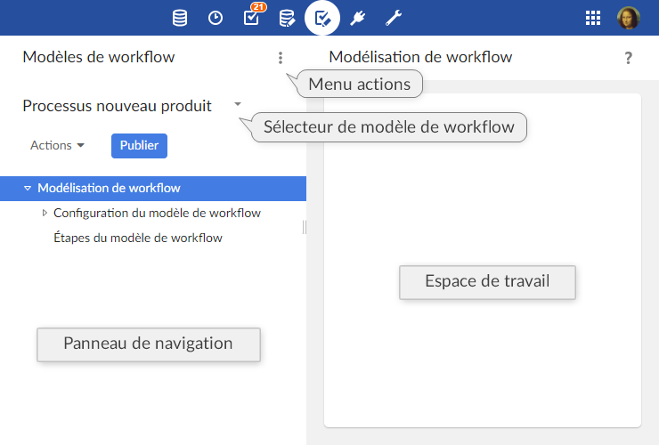

Introduction aux modèles de workflow
Présentation
Définition d'un modèle de workflow
Dans TIBCO EBX®, les workflows facilitent la gestion collaborative des données dans le référentiel. Un workflow peut contenir des actions utilisateurs sur les données ainsi que des tâches automatiques, tout en émettant des notifications sur différents événements.
La première étape pour réaliser un workflow est de créer un modèle de workflow qui définit la succession d'étapes, les implications des utilisateurs, ainsi que le comportement du workflow.
Une fois qu'un modèle de workflow est défini, il peut être validé et publié comme publication de workflow. Ensuite, les workflows de données peuvent être lancés à partir de la publication de workflow pour exécuter les étapes définies dans le modèle de workflow.
Concepts de base utilisés dans la modélisation des workflows
Une compréhension des termes suivants est nécessaire pour réaliser la création de modèles de workflows :
Utilisation de l'interface de modélisation de workflow

Note
Seuls les utilisateurs autorisés peuvent accéder à cet écran via la 'Perspective avancée'. Seuls les utilisateurs autorisés peuvent accéder à ces interfaces spécifiques.
Modèles de message génériques
Des emails de notification peuvent être envoyés pour notifier les utilisateurs d'événements spécifiques pendant l'exécution d'un workflow.
Les modèles de message peuvent être définis et réutilisés dans n'importe quel modèle de workflow dans le référentiel. Pour modifier les modèles de message génériques, sélectionnez "Modèles de message" dans le menu 'Actions' de la section Modèles de Workflow.
Ces modèles, qui sont partagés par tous les modèles de workflows, sont figés et inclus dans chaque publication de workflow. Ainsi, pour prendre en compte les modifications des modèles de message, il sera nécessaire de mettre à jour les publications existantes en re-publiant les modèles de workflow concernés.
A noter également que, lors d'un archivage, si l'on souhaite sauvegarder ces modèles de messages, le jeu de données "configuration" doit être sélectionné car celui-ci contient ces modèles.
A la création d'un modèle de message générique, deux champs sont obligatoires :
'Libellé & Description' : spécifie les libellés et descriptions associés à ce modèle de message, localisé.
'Message' : spécifie l'objet de l'email et son corps de texte, localisés.
Le 'Type du message' est une donnée facultative.
Le message peut inclure des variables du contexte de données sous la forme ${nom.variable}, qui seront évaluées lorsque le message sera envoyé. De plus, les variables système suivantes peuvent être incluses :
system.time | Heure système du référentiel. |
system.date | Date système du référentiel. |
workflow.lastComment | Dernier commentaire sur la tâche utilisateur précédente. (Note : cette variable concerne la dernière tâche utilisateur, et non la courante. Est considérée courante la tâche sur laquelle est positionné le workflow, incluant également la notification de complétion de tâche utilisateur). |
workflow.lastDecision | Dernières décisions sur la tâche utilisateur précédente. (Note : cette variable concerne la dernière tâche utilisateur, et non la courante. Est considérée courante la tâche sur laquelle est positionné le workflow, incluant également la notification de complétion de tâche utilisateur). |
user.fullName | Nom complet de l'utilisateur notifié. |
user.login | Login de l'utilisateur notifié. |
workflow.process.label | Libellé du workflow en cours. |
workflow.process.description | Description du workflow en cours. |
workflow.workItem.label | Libellé du bon de travail en cours. |
workflow.workItem.description | Description du bon de travail en cours. |
workflow.workItem.offeredTo | Rôle auquel le bon de travail courant a été proposé. |
workflow.workItem.allocatedTo | Utilisateur, à qui le bon de travail en cours a été alloué. |
workflow.workItem.link | Lien d'accès au bon de travail courant dans la corbeille, au moyen de l'API du composant web. Pour que ce lien soit calculé, il est nécessaire qu'un bon de travail courant soit défini et que l'URL soit configurée dans Workflow-executions, dans la configuration de mail. |
workflow.workItem.link.allocateAndStart | Lien d'accès au bon de travail courant dans la corbeille, au moyen de l'API du composant web. Si le bon de travail cible n'est pas encore démarré, il sera automatiquement alloué à l'utilisateur qui a cliqué sur le lien, puis démarré. Pour que ce lien soit calculé, il est nécessaire qu'un bon de travail courant soit défini et que l'URL soit configurée dans Workflow-executions, dans la configuration de mail. |
workflow.currentStep.label | Libellé de l'étape courante. |
workflow.currentStep.description | Description de l'étape courante. |
Exemple
Modèles de message générique :
Aujourd'hui à ${system.time}, un nouveau bon de travail vous a été proposé.
Email résultant :
Aujourd'hui à 15:19, un nouveau bon de travail vous a été proposé.
Limitations de workflows
Les fonctionnalités suivantes ne sont pas supportées :
Tâches programmées, tâches exécutées dès lors que leur tour vient, et dont l'exécution ne peut pas être reportée.
Tâches événementielles permettant au workflow de progresser quand il reçoit un événement, du type appel web service.
Limitation temporelle sur la durée d'une tâche.
Concepts apparentés
 Sommaire du guide utilisateur
Sommaire du guide utilisateur